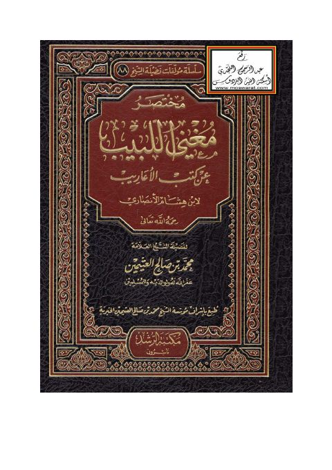

مختصر مغني اللبيب عن كتب الأعاريب لابن هشام الأنصاري
Authors: محمد بن صالح العثيمين
Publishers: مكتبة الرشد ناشرون
Download Downloads need an internet connection.
- Published
- 1433ه، 2012م
- Country
- الرياض، السعودية
- Edition
- 3
- Volumes
- 1
- Pages
- 228
- Type
- كتاب
- Category
- اللغة العربية
- Subcategory
- نحو
Description
**▫️ العنوان: مختصر** مغني اللبيب عن كتب الأعاريب لابن هشام الأنصاري ▪️ المؤلف: #محمد_بن_صالح_العثيمين ▫️ المحقق: ▪️ الناشر: #مكتبة_الرشد ▫️ تاريخ النشر: 1433ه، 2012م ▪️ بلد النشر: الرياض، #السعودية ▫️ الطبعة: 3 ▪️ عدد الأجزاء: 1 ▫️ الصفحات: 228 ▪️ نوع الوعاء: #كتاب ▫️ التصنيف الرئيسي: #اللغة_العربية ▪️ التصنيف الفرعي: #نحو ۪